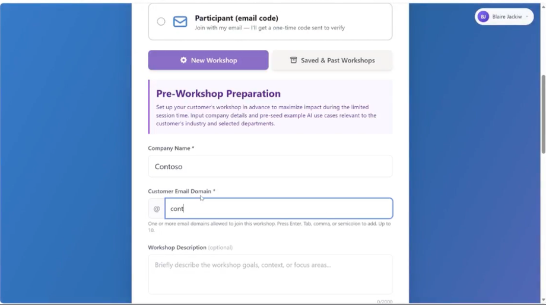
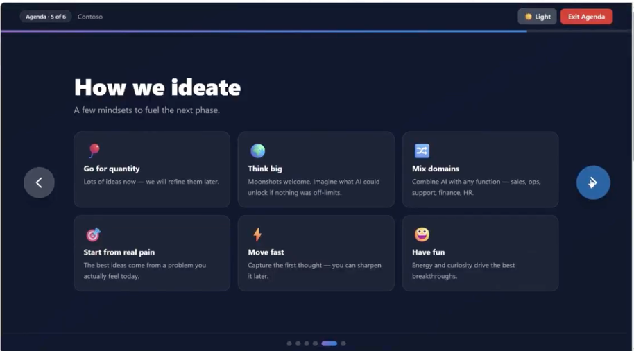
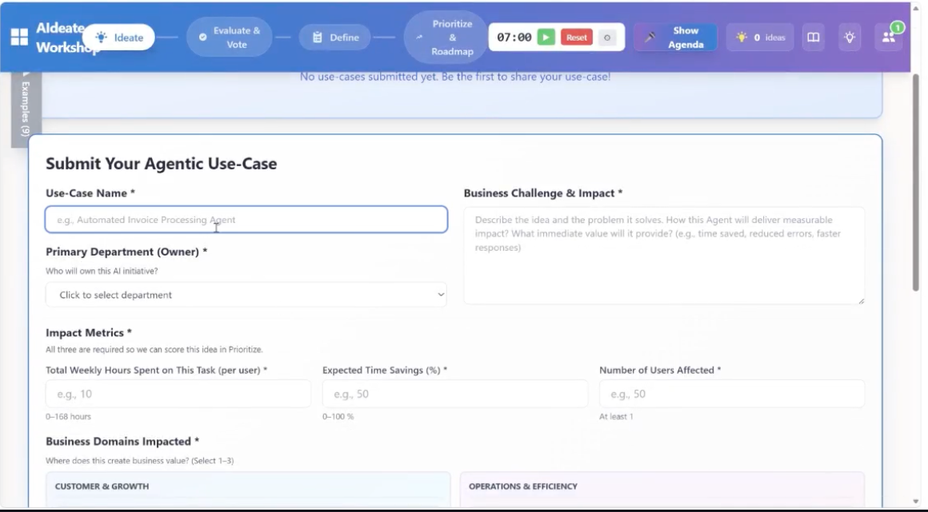
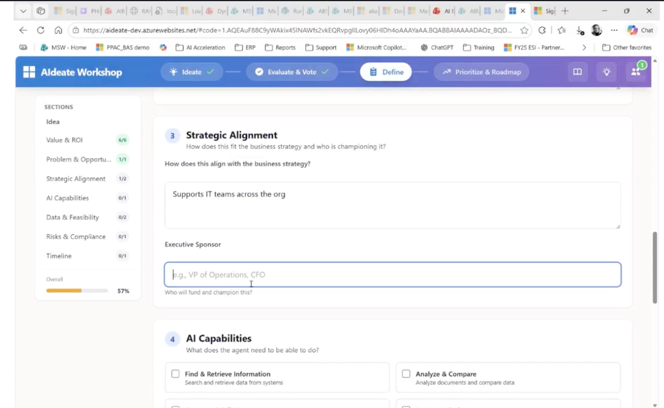
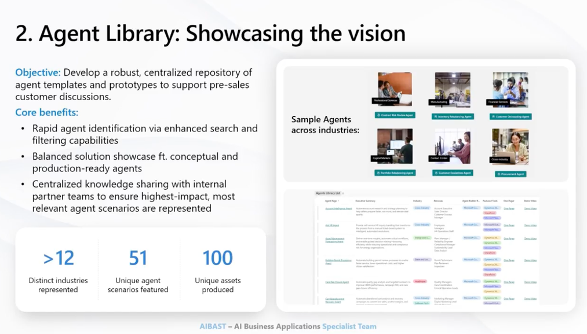
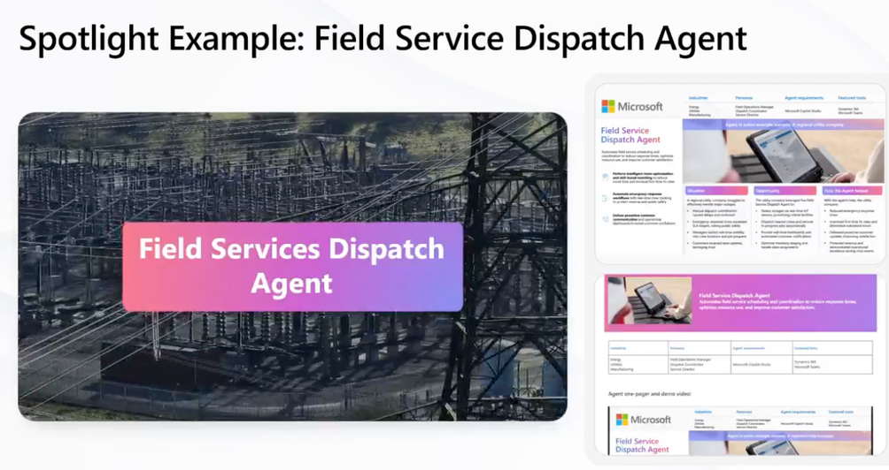
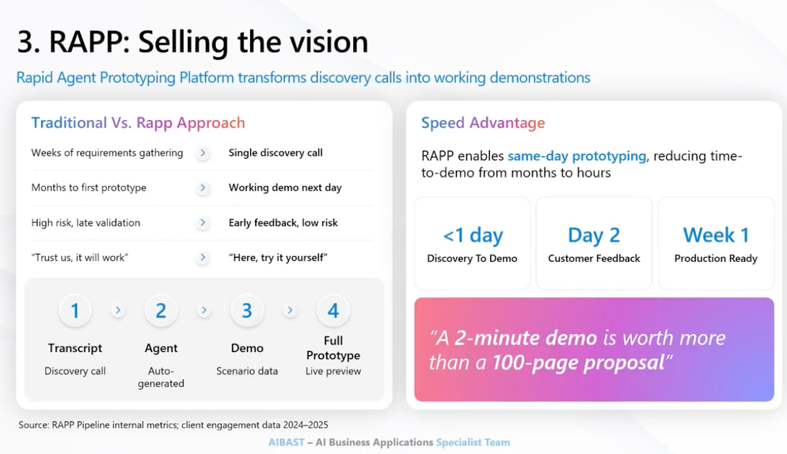
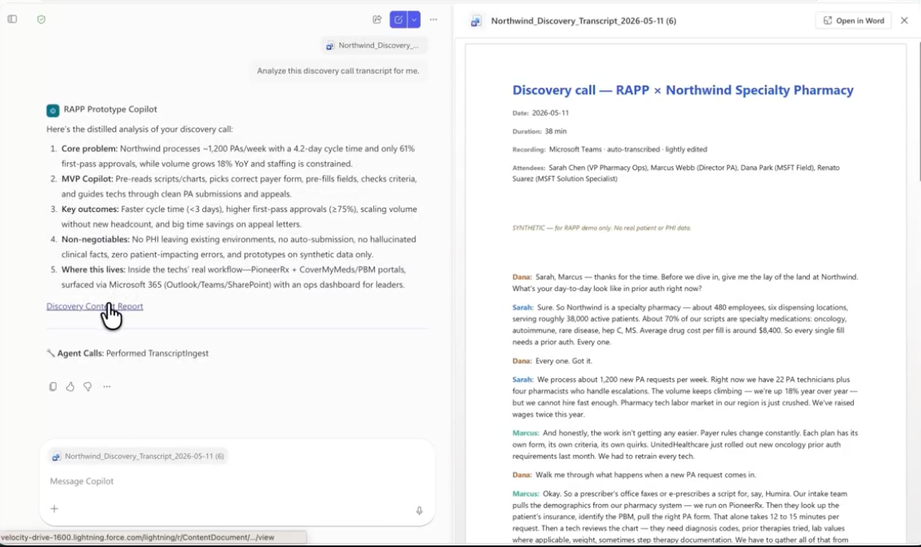
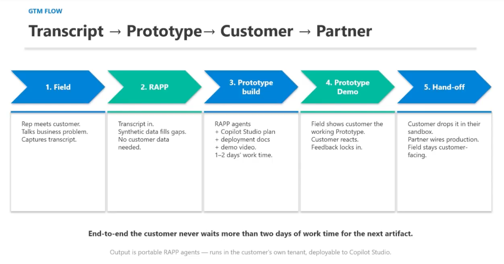
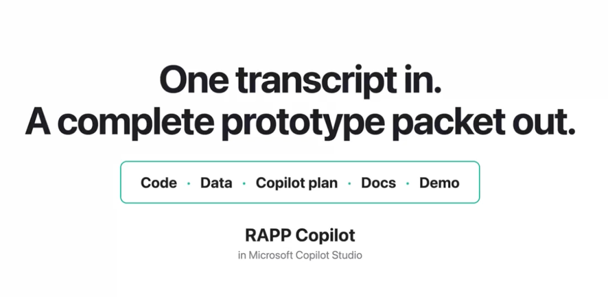

A two-phase field motion: stand up a live, password-protected customer microsite on GitHub Pages, then feed it with prioritized use cases and working agent demos from the IBAS agentic toolchain. From slideware to a living, shippable URL.
We are moving from PowerPoint to HTML pages because they ship as a living website the customer can open, edit, and own. The catch was always distribution — GitHub Pages solves it. Here is the exact path Jake walked through, start to finish.
In Copilot (or Scout / CoWork — the tool does not matter), brief the AI on who you are meeting and the goal. Iterate on the copy a couple of times until the message is crisp, then have it build the HTML artifact. The lesson learned: do not over-polish the text in chat — get into the HTML artifact quickly because the design makes the copy make sense.
.md file in your Second Brain with the customer's language and color scheme. Point the AI at it so the output is account-specific from the first draft.Give the AI the customer's website URL and say "use the customer's color scheme." It scrapes the site (Playwright, headless — you can watch it work), pulls the palette, and re-themes the page. To reuse a deck for a new account: hand it the HTML/zip and say "replace Advent Health with Baylor, use their colors, swap the modernization tab to their 'Reimagine Baylor' language."
Ask the AI to protect the page with an encrypted access code (Jake used an abbreviated customer name + date, e.g. AHFL0619). Add the Microsoft logo and the customer logo at the top, a title (e.g. "Shared Resources") and a subtitle.
Use your personal GitHub account — the enterprise account cannot publish Pages. Create a new repository (name it for the customer, e.g. cx.adventhealthflorida). Then Add file → Upload files: your index.html and any password-protected canvas/decks. Commit the changes.
index.html becomes a "Shared Resources" landing page — so a curious Chief AI Officer who navigates to the root still lands on their branded page, not a raw README.Go to Settings → Pages. Leave Deploy from a branch. Under Branch, select main and Save.
main branch will not appear in the dropdown until an index.html exists in the repo — that file is the trigger.Send the URL straight to the customer. To clean it up, front it with an aka.ms/ short link per customer — no need to buy a domain. The page is now a living document: the customer can be walked through it, own it, edit it, and share it up to their boss, so everyone has skin in the game.
index.html at repo root is mandatory · select the main branch in Pages · passcode-protect · no PHI or sensitive data · one repo per customer with a branded root landing page.
A microsite is only as good as what is on it. The IBAS (AI Business Applications Specialist) team built three internal, field-facing tools focused entirely on deal momentum. They are distinct tools that play together across the pre-sales funnel — and their outputs are exactly what you drop onto the customer's GitHub Pages site. Watch each tool demoed step by step in the walkthrough below.
A repeatable workshop that surfaces and prioritizes a customer's agentic use cases in 90 minutes or less, grounded in business value and ROI.
Customers are eager to adopt agents but do not know which ones or how to prioritize. AIdeate runs a four-step facilitated session — Ideate → Vote → Define → Prioritize/Roadmap — and exports a clean, customer-ready PDF / Word / Excel of their top scenarios. Anyone at Microsoft can facilitate it.
▶Watch: AIdeate walkthrough



A centralized repository of customer-facing agent demos and prototypes for fast access in pre-sales conversations.
Enhanced search and filtering surfaces the most relevant agent scenarios. Every entry ships with a demo video and a PDF one-pager (industry + persona + business value), ready to download and drop straight onto the customer microsite. One-click deploy agents are coming next.
▶Watch: Agent Library walkthrough

Turn one discovery transcript into a customer-specific, working agent demo in days, not weeks. Built inside Microsoft Copilot Studio.
Even after a great AIdeate session, momentum dies while partners spend weeks on a build. RAPP fills the gap for unique use cases the Agent Library does not cover. Drop a real discovery transcript into chat and seven agents fire — producing agent code, synthetic zero-PII data, a Copilot Studio plan, a partner deployment guide, and a scene-by-scene demo script. One transcript in, a complete prototype packet out.
▶Watch: RAPP walkthrough (~11 min mark)



The two phases are one motion. AIdeate surfaces and prioritizes the customer's real problem. The Agent Library (or RAPP, for net-new scenarios) produces the demo, one-pager, and prototype. The GitHub Pages microsite is where you ship all of it — a branded, passcode-protected, living URL the customer owns. Recaps and prototypes working together = fast show-and-tell that keeps deal momentum alive.